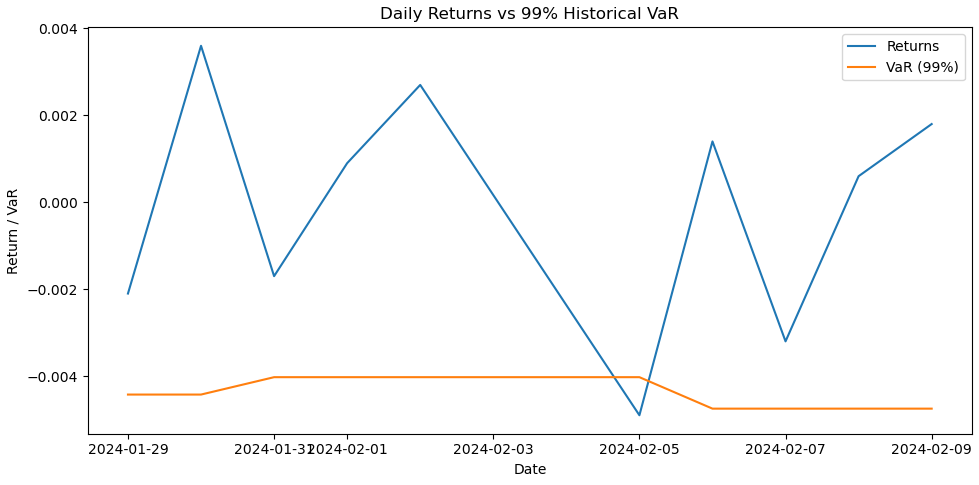

Regulatory VaR Backtesting Engine (Basel Traffic-Light)
End-to-end Basel-style VaR backtesting framework including exceptions count, Kupiec Proportion-of-Failures test, and traffic-light classification (Green / Yellow / Red) with automated reporting.
- Computes 1-day 99% Historical VaR with rolling-window estimation.
- Detects and counts VaR breaches (exceptions) and compares against Basel thresholds.
- Implements Kupiec LR test to statistically evaluate model calibration.
- Generates markdown risk reports summarizing confidence level, breach count, LR statistic and traffic-light zone.
